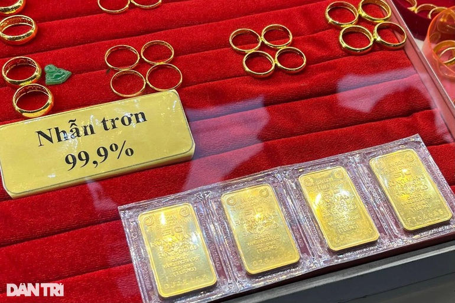

Hoàng Dung • Thứ tư, 08/06/2022 - 18:44
(Dân trí) - Thống đốc Nguyễn Thị Hồng thừa nhận, khoảng cách giữa vàng miếng SJC và vàng thế giới ngày càng rộng một phần đến từ chủ trương chống vàng hóa trong nền kinh tế.
Tại phiên chất vấn Thống đốc Ngân hàng Nhà nước (NHNN) Nguyễn Thị Hồng chiều 8/6, đại biểu Nguyễn Phương Thủy (Hà Nội) đã đặt câu hỏi về diễn biến không bình thường của giá vàng SJC, nhất là đầu năm nay, khi chênh lệch giữa giá vàng trong nước và thế giới quá cao, có lúc trên 20 triệu đồng/lượng.
Đại biểu cho rằng mức chênh lệch này quá khác biệt giữa vàng miếng SJC với giá vàng trang sức SJC cùng hàm lượng hay giá vàng miếng SJC với giá vàng miếng đến từ thương hiệu khác. Theo bà Thủy, điều này gây tâm lý hoang mang, bất an cho người dân và làm giảm niềm tin vào giá trị đồng tiền Việt Nam, gia tăng lạm phát.
Trước tình trạng trên, "NHNN đã tiến hành thanh tra, kiểm tra yếu tố hình thành giá khi giá vàng miếng biến động hay chưa. Liệu có trường hợp bắt tay, thao túng giá vàng miếng SJC trên thị trường hay không và bao giờ NHNN sửa đổi Nghị định 24 về quản lý hoạt động kinh doanh vàng", đại biểu đặt câu hỏi.
Khoảng cách giữa vàng miếng SJC và vàng thế giới ngày càng rộng (Ảnh: Việt Đức).
Trả lời đại biểu, Thống đốc Ngân hàng Nguyễn Thị Hồng cho rằng, trong thời gian qua, diễn biến trên thị trường vàng thế giới khá phức tạp và khó lường. Giá vàng chịu tác động bởi nhiều yếu tố như chỉ số đồng USD, căng thẳng giữa Nga và Ukraine và một số yếu tố thương mại, chính trị. Có thời điểm, giá vàng cán mốc 2.000 USD/ounce nhưng có lúc xuống 1.700 - 1.800 USD/ounce.
Theo đánh giá của NHNN, giá vàng trong nước có cùng xu hướng với giá vàng thế giới. Tuy nhiên, tốc độ điều chỉnh tăng của giá vàng trong nước nhanh hơn, còn tốc độ điều chỉnh xuống của giá vàng trong nước lại chậm hơn giá vàng thế giới.
Giá vàng của các nhãn thương hiệu, không phải SJC chỉ chênh với giá vàng thế giới khoảng 2 triệu đồng/lượng. Còn giá vàng SJC thì chênh lệch với giá vàng thế giới tới 16 - 17 triệu đồng/lượng.
Giải thích về mức chênh lệch trên, Thống đốc Ngân hàng cho rằng, một phần xuất phát từ chủ trương chống vàng hóa trong nền kinh tế. Năm 2012 là thực hiện Nghị định 24 về quản lý hoạt động kinh doanh vàng. Từ năm 2014 đến nay, NHNN không nhập vàng về sản xuất vàng miếng.
Do đó, nguồn cung vàng miếng trong nước giảm đi, vì một phần số vàng được chuyển sang sản xuất vàng trang sức mỹ nghệ. Cùng với sự biến động của giá vàng thế giới, bản thân các DN kinh doanh vàng miếng khi niêm yết giá cũng lo ngại rủi ro nên đã niêm yết giá cao. Hơn nữa, SJC là thương hiệu vàng được người dân ưa chuộng hơn cả nên DN niêm yết giá cao.
Theo quan sát của NHNN, giá vàng mua và bán các tổ chức thường chênh 1 - 1,5 triệu đồng/lượng. Vàng SJC mua cao thì báo cao, trong khi thương hiệu khác thì mua thấp bán thấp. Với vai trò quản lý nhà nước về vàng, NHNN đã chuẩn bị sẵn sàng phương án can thiệp nếu cần thiết.
Tuy nhiên, trong thời gian qua, dựa trên số liệu tổng hợp của các tổ chức kinh doanh vàng thì NHNN thấy người dân không có nhu cầu mua vàng miếng nhiều mà bán ròng, nhất là khi giá vàng cao, người dân mang vàng đi bán để lấy Việt Nam đồng.
"Do đó, NHNN chưa tổ chức nhập khẩu thêm để can thiệp giá vàng nhưng chúng tôi đã xây dựng phương án khi cần thiết để thực hiện. Vì khi nhập khẩu vàng, NHNN sẽ dùng dự trữ ngoại hối để can thiệp", Thống đốc Ngân hàng Nguyễn Thị Hồng lý giải.
Blog Techmaster Liên hệ Citibank